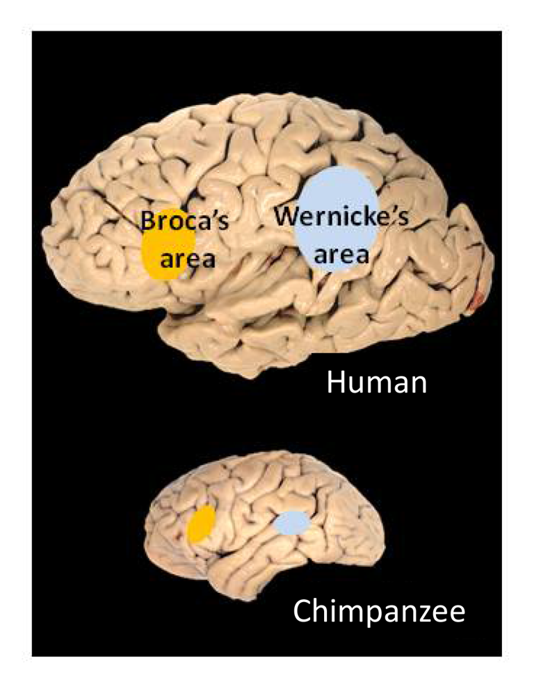

应用语言学#
语言与健康#
语言功能与人类大脑密切相关。大脑中有特定区域专司语言的产生和理解。如果这些区域受损，语言能力会出现障碍，称为失语症。研究表明，中风是导致失语症的最常见原因之一；大约34%–38%的中风患者会出现某种失语症。
大脑左半球的布罗卡区（Broca’s area）和韦尼克区（Wernicke’s area）是语言产出和理解的重要区域。布罗卡区位于左额叶，负责语言的表达；韦尼克区位于左颞叶，负责语言理解。如果布罗卡区受损，会出现表达性失语症（又称Broca失语症）。患者理解他人语言的能力相对完整，但说话非常吃力，往往只能说出零散的内容词，缺乏语法功能词（如介词、冠词），句子听起来像电报文体。尽管句子不连贯，听者通常还能猜出大意，因为患者说出了关键词。然而，患者无法流利地构造完整句子。
与此相对，如果韦尼克区受损，则产生接受性失语症（Wernicke失语症）。这类患者能够说话，甚至语调流畅、句法完整，但语义内容混乱，往往是自创的或无意义的词串，使人难以理解。他们自己的语言理解能力也受损，可能听不懂别人的话。换言之，韦尼克失语症患者“能说不能懂”，而布罗卡失语症患者“能懂不能说”。这些临床现象表明，语言的不同功能（表达与理解）在大脑中有相对独立的处理模块。
对比维度 |
布罗卡区（Broca’s Area） |
韦尼克区（Wernicke’s area） |
|---|---|---|
大脑位置 |
左额叶 |
左颞叶 |
负责功能 |
语言的表达 |
语言的理解 |
受损后症状 |
表达性失语症（Broca失语症） |
接受性失语症（Wernicke失语症） |
典型表现 |
能理解语言但无法流利地表达，即“能懂不能说” |
能说但不能理解语言，即“能说不能懂” |
语言流畅性 |
无法流利构造完整句子，说话断断续续 |
能流利地说话，但内容杂乱、语义不清 |
听者理解难度 |
听者通常能通过关键词猜测大意 |
听者难以理解，因为语言缺乏语义逻辑 |
举例说明 |
说话类似“我……想……苹果”，能懂但不流畅 |
说话类似“太阳书桌走路开心”，语言通畅但无意义 |

上图显示了人类大脑左侧面的语言区位置：黄色标示的是布罗卡区，蓝色标示的是韦尼克区，它们分别主管语言的产生和理解。
语言与心理健康#
语言还能反映人的心理状态。例如：
抑郁症患者的文字和言语往往带有消极情绪词汇、自我代词使用增多等特征；
精神分裂症患者的语言可能出现紊乱的句子结构或新造词。
这些都为自动化的文本分析提供了切入点。通过语言技术监测社交媒体帖子中的语言模式，有可能及早识别出抑郁倾向或自杀风险，从而进行干预。
案例#
在语言与健康的交叉研究中，有一个引人注目的案例：通过分析知名作家晚年作品的语言复杂度变化来推断其认知状态。例如，研究者分析已故英国小说家艾丽丝·默多克（Iris Murdoch）生前不同阶段小说的语言风格，发现她在罹患阿尔茨海默症前后的作品中，词汇丰富度和句法复杂度明显下降。这从侧面印证了疾病对语言能力的影响。尽管一般人不会有多部著作供分析，但这一思路启发了以日记、书信等个人文本作为素材进行认知障碍检测的研究。如果一个人的日常书写语料随着年龄增长表现出显著的语言退化特征，或可作为临床筛查的辅助信息。
言语治疗（Speech Therapy）#
语言不仅承载了人类的思想，也折射出大脑的健康状态。现代技术使我们能够客观分析语言的细微特征，为医疗诊断和康复提供支持。通过语料库分析诊断阿尔茨海默症就是一个典型例子：计算机程序提取患者语言样本中的特征，譬如平均句长、不同词汇比例、语法错误率等，综合判断其与认知障碍人群的相似程度，从而辅助医生做出诊断决策